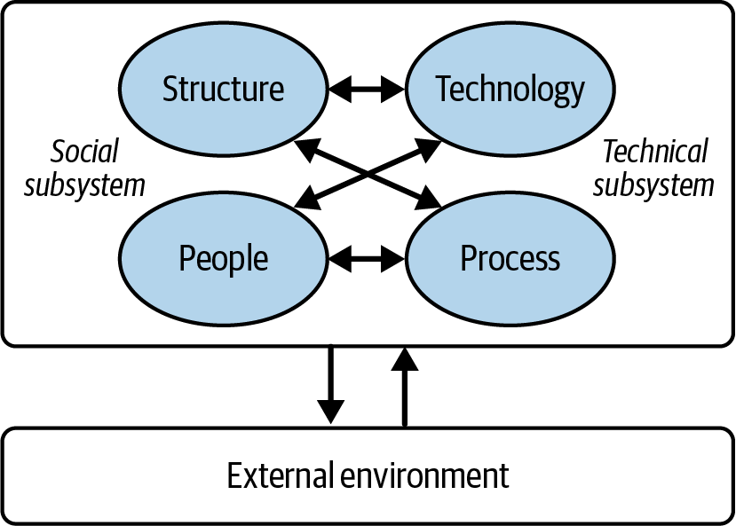
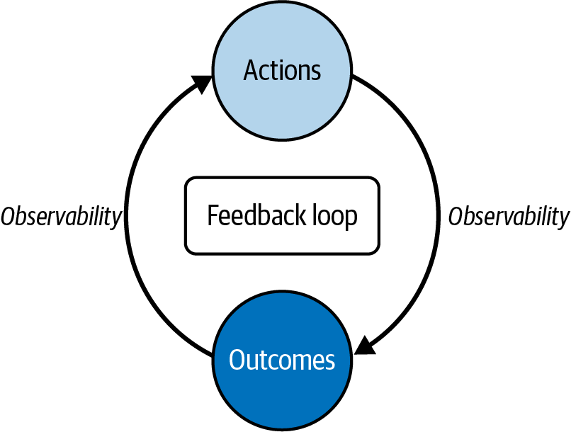
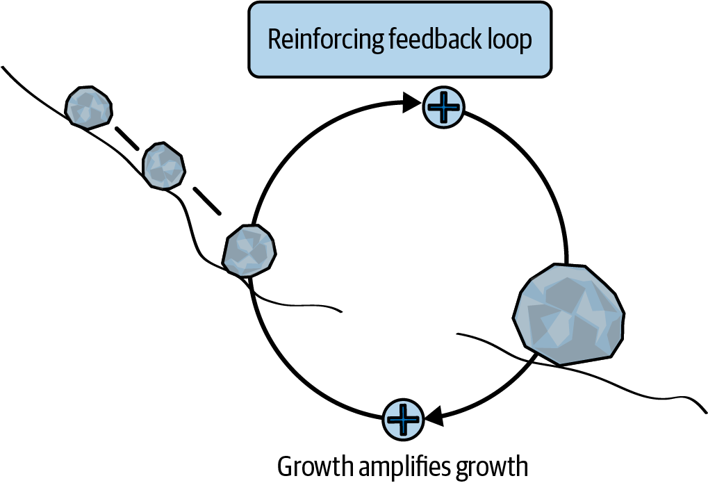
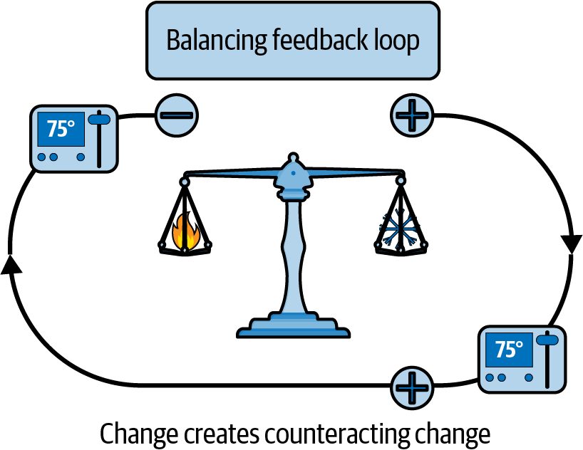
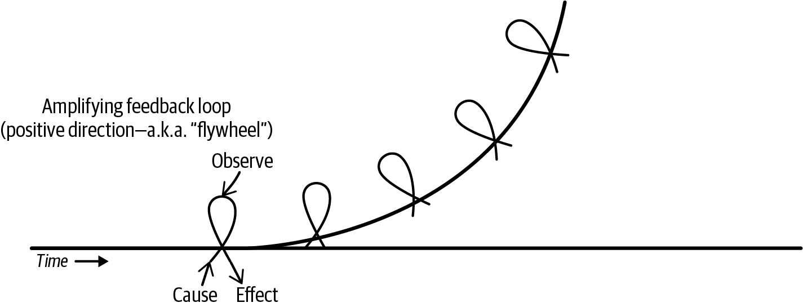
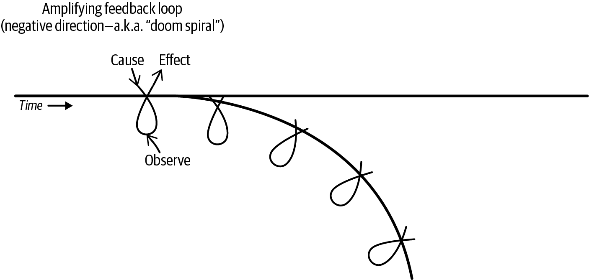
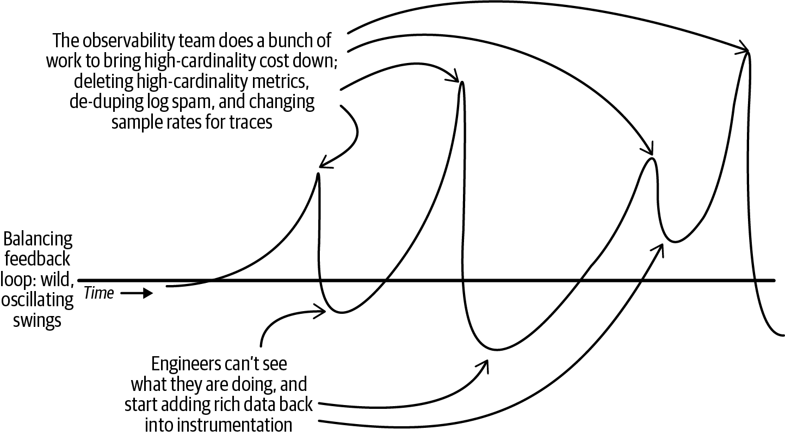
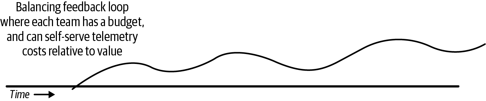

<title>第 24 章　軟體交付的系統思考 — 《可觀測性工程》第二版</title>
<link rel="stylesheet" href="style.css">

<nav class="chapnav">
    <a href="ch23.html">← 上一章</a>
    <a href="index.html">目錄</a>
    <a href="ch25.html">下一章 →</a>
  </nav>
<main>
  <header class="masthead">
    <span class="eyebrow">Observability Engineering · Second Edition</span>
    
    <h1 class="title serif">第 24 章<br>軟體交付的系統思考</h1>
    <div class="rule"></div>
  </header>

  <p>在前一章中，我們探討了人工智慧如何放大組織既有的行為。接下來的關鍵問題是：我們該如何優化定義組織學習速度的具體行為？要回答這個問題，我們必須超越單一工具的視角，將軟體交付視為一個複雜的社會技術系統來檢視。</p>
<p>每個複雜系統都有其槓桿點，軟體交付也不例外。從個別工具退一步，以整體的角度審視這個系統，我們就能找到正確的槓桿點來加速組織學習。</p>
<p>2025 年 DORA 報告直白地描述了這種需求：「成功採用人工智慧是一個系統問題，而非工具問題」（第 4 頁）。報告中也指出：「當人工智慧大幅加速軟體開發時，我們的控制系統——也就是我們自己——也必須加快腳步⋯⋯我們需要更快的回饋循環——比以往任何時候都要快——才能跟上人工智慧加速的程式碼生成速度」（第 9 頁）。</p>
<p>在本章中，我們將運用系統思考來說明塑造誘因、規範、工作流程與技術能力的回饋循環。我們將探討什麼是社會技術系統、哪些槓桿會形塑這些系統，以及可觀測性在建立有效回饋循環中扮演的關鍵角色。你將學到應該鎖定哪些資訊流——以及為什麼這些做法比改變預算、指標或組織架構圖能產生更好的結果。</p>
<h2 class="section serif">社會技術系統</h2>
<p>讓我們先運用系統思考來檢視軟體交付流程。系統思考意味著以整體的方式理解複雜問題，將其視為彼此相連的整體，而非孤立的個別部分。系統思考聚焦於元素之間的關係、模式與回饋循環，藉此呈現某一領域的行動如何影響整個系統。</p>
<p>關於軟體交付，首先要承認的一點是：它是一個社會技術系統。如圖 24‑1 所示，社會技術系統是指技術與人類行為深度交織的任何系統。改變技術會改變組織行為，而改變組織限制也會改變系統行為。</p>
<figure class="plate">
<figcaption>圖 24‑1。人員與結構會影響哪些工作被完成、如何完成，以及優先順序如何排定。技術子系統及其需求則會形塑認知負荷、交接方式、失效模式，以及圍繞它們形成的結構。這些力量是相互作用的。你無法只解決其中一方就了事；這個系統會持續共同產生結果。</figcaption></figure>
<p>你的生產環境不只是程式碼與基礎架構，也包含操作它的團隊、他們所處的結構、他們回應的誘因，以及他們仰賴的溝通模式。人員、結構、誘因、流程與限制彼此形塑。</p>
<p>你想要的行為，是由這些元素互動的方式所產生（或壓抑）的。你必須同時調整並適應這兩者，才能推動有意義的改變。</p>
<h2 class="section serif">你必須同時優化社會面與技術面</h2>
<p>Trist 原則指出，組織必須共同優化其社會系統與技術系統，才能達到最佳表現。若只改善其中一方而忽略另一方，往往會產生次優的結果。1</p>
<p>每一個技術決策（架構、工具、平台）都有社會層面的影響（團隊結構、招募、流程），而每一個社會決策也都有技術層面的影響。在資深</p>
<p class="fn">1 Eric Trist，《The Evolution of Socio‑Technical Systems: A Conceptual Framework and an Action Research Program》（Ontario Ministry of Labour, 1981）。</p>
<p>在各個層級，管理者與個別貢獻者都需要對技術現實與周邊的組織動態，建立扎實的理解。</p>
<p>實務上，這項原則最常見的違反情況，就是管理者、總監與副總裁在未諮詢最接近問題的工程師的情況下，逕自做出所有重要的工具決策。工程主管往往認為自己的技術能力足以代表系統的雙方，即使他們已經十年沒有寫過生產環境的程式碼。有時他們確實是對的。但爭取那些必須長期承受這些決策、並為其負責的人的認同，永遠不會是個壞主意。</p>
<p>請記住，你的目標是改變你的社會技術系統學習的方式。你的道路上會有許多障礙。管理層往往對進展緩慢感到沮喪。工程週期經常淪為疲於奔命地救火。你會很想對這些問題丟出簡單的解決方案。</p>
<p>遺憾的是，你無法靠招募人才來擺脫這個問題（許多人試過了）。你也無法靠購買更多工具來擺脫它（許多人也試過了）。</p>
<p>但你能修復它——一起修復。而系統思維正是起點。</p>
<h2 class="section serif">改變資訊流</h2>
<p>在她關於系統思維的開創性著作中，唐內拉·梅多斯（Donella Meadows）指出了複雜系統中一系列干預點的層級。2 其中最弱的是表層調整：微調預算、改變指標、轉移地點。這些做法只會產生暫時性的效果，很快就會被系統吸收並抵消。</p>
<p>如果貴組織背負著第 23 章所述那些未解決的社會技術債，表面上的微調並無濟於事——那些正是導致今天局面的原因。你需要在具有槓桿作用的點上施力，才能創造持久的改變。最強大的介入手段，是改變支配系統行為的資訊流。</p>
<p>資訊流是指資料、訊號或知識在系統各元件之間的傳遞——它影響系統如何行動、如何調適，或如何維持穩定。改變資訊流，就會改變人們能看到什麼。而這又會改變他們的決策與行為。</p>
<p>有效的改變並非取決於你投入多少力氣——救火雖然耗費大量精力，卻無法改變系統本身。要改變系統，你需要的是槓桿點與回饋迴路。</p>
<p>當你改變你的可觀測性時，你也改變了每天支配數百個其他決策制定方式的資訊動態。這是對你底層社會技術作業系統的一次改變。</p>
<p class="fn">2 Donella H. Meadows, Thinking in Systems: A Primer (Chelsea Green Publishing, 2008).</p>
<p>可觀測性是一種資訊流。它是你的程式碼從生產環境回報有關用戶、產品、系統與程式碼的重要資訊。大多數人都能理解這一點。較少人理解的是，可觀測性在社會技術系統中所扮演的角色：它創造了循環的資訊流——回饋迴圈。沒有可觀測性？就沒有回饋迴圈。只剩下四處發生的因果混亂，彼此之間毫無邏輯關聯。</p>
<p>將回饋迴圈視為核心槓桿點，這正是後續所有內容的基礎。</p>
<h2 class="section serif">回饋迴路如何驅動變革</h2>
<p>大多數組織都疲於奔命。資源被過度分配，目標不斷延遲，各團隊仰賴的其他團隊也同樣進度落後，不斷的救火行動讓進展變得困難。在如此缺乏餘裕的情況下，究竟該如何向前邁進？</p>
<p>唯一的解決方法就是找出關鍵的回饋循環並在上游解決它們。這項工作將帶來轉變，讓團隊能夠從每天撲滅熊熊烈火，進展到每隔幾天撲滅較小的垃圾火災，再到能輕易踩熄的小火——最終達到從一開始就防止火柴被劃燃的境界。</p>
<p>軟體交付是由回饋循環所組成的。只要行動會影響結果、而結果又會影響未來的行動，回饋循環就會存在，如圖 24‑2 所示。是一個團隊因為本身就很優秀所以投資了優質的工具嗎？還是因為投資了更好的工具才使他們變成優秀的團隊？（兩個問題的答案都是：沒錯！）</p>
<figure class="plate">
<figcaption>圖 24‑2　一個簡單的回饋循環：行動影響結果，結果又影響未來的行動。兩個箭頭都代表可觀測性。</figcaption></figure>
<p>回饋迴路有兩種類型：放大迴路與平衡迴路。這兩種迴路描述的是該迴路會加速變化，還是抑制變化。所有組織中都同時存在這兩種迴路。</p>
<h2 class="section serif">放大迴路加速變化</h2>
<p>放大回饋迴路（amplifying feedback loop，也稱為「強化」或「正向」迴路，如圖 24‑3 所示）是一種自我強化的循環，系統中的某個變化會觸發一個反應，進而放大原本的效果，使變化持續加速。</p>
<p>如果你在滿是積雪的山頂放開一顆石頭，重力會讓它滾下山坡，雪會逐漸黏附上去，讓它變得越來越重、越來越黏、滾得越來越快，最終形成（或引發）雪崩。如果你在山底放開同一顆石頭，沒有下坡的坡度來啟動這個循環，你只會得到⋯⋯雪地上的一個凹痕。</p>
<figure class="plate">
<figcaption>圖 24‑3　重力與動量會把正在發生的事情（雪球滾動時黏附的積雪）進一步放大（雪球變得更大）。</figcaption></figure>
<p>放大迴路可能向上盤旋形成良性循環，也可能向下墜入死亡漩渦。它們會放大你投入其中的任何東西。放大迴路是組織中指數性、非線性效應的根源，也是推動變革的強大力量。</p>
<h2 class="section serif">平衡回饋迴路創造穩定與平衡</h2>
<p>平衡（或稱「負向」）迴路會朝相反方向施力以抵銷變化，如圖 24‑4 所示。若為房間加熱，恆溫器就會啟動以調節溫度。若沒有它，房間就會變成烤箱。</p>
<p class="fn">3 在商業領域，這有時被稱為「飛輪」。</p>
<figure class="plate">
<figcaption>圖 24‑4。恆溫器負責調節溫度。當室溫低於 75 度時，暖氣啟動；當室溫超過75 度時，冷氣啟動。系統藉此強化平衡狀態。</figcaption></figure>
<p>平衡迴路能創造穩定性並維持均衡。它們會抵抗系統朝成長或衰退的方向失控發展，也是組織中大多數自我調節與持久效應的來源。</p>
<h2 class="section serif">微小變化也能引發劇烈改變</h2>
<p>當一個長期穩定的局面突然出現劇烈崩潰或動盪時，很少是完全歸因於系統中出現了某種新的力量。更有可能的情況是，某個放大迴路早已與一個平衡迴路持續拉鋸了一段時間，直到情勢出現細微變化，超出了平衡迴路所能負荷的範圍。4</p>
<p>人才流失的故事背後往往就是如此：一間公司多年來看似留任率穩定，卻在三個月內流失了一半的資深工程師。表面之下，不滿情緒其實已醞釀多年：不合理的升遷、被取消的專案、缺乏晉升機會——這是一個放大迴路。然而，慣性、golden handcuffs（黃金手銬，指高額留任誘因）以及嚴峻的就業市場讓大家仍留在原地——這是一個平衡迴路。</p>
<p>接著，一位備受敬重的工程師離職，找到了很棒的新工作，並在網路上分享這件事。其他心懷不滿的員工因此意識到，離開是可能的；平衡迴路就此被移除。於是更多人離職。「大家都在走」的印象逐漸形成，離職潮不斷擴大，最終真的成為事實。</p>
<p class="fn">4 用一句俗話來說，這常被稱為「壓垮駱駝的最後一根稻草」。</p>
<h2 class="section serif">良性循環與死亡螺旋的差別在於自我修正的能力</h2>
<p>良性循環與死亡螺旋的差別很少在於意圖，而是在於系統是否能夠看得夠清楚，進而自我修正。讓我們來看一個範例。</p>
<p>假設 A 團隊決定拆解他們的單體。他們分拆出一項新服務，運作良好、部署速度變快，team 因此很有成就感。他們接著又建立了另一項，再一項。良性循環就此展開。</p>
<p>在良性情境中，他們仔細檢測每項服務，追蹤跨服務延遲、部署頻率與失敗率。當第八個服務開始造成逾時與連鎖故障時，他們在追蹤資料中立刻就能看見問題，並理解原因。他們意識到自己已經達到營運成熟度的極限，於是暫停腳步，投資更好的工具、改善除錯能力，並加強值班訓練。之後再繼續前進。這個回饋迴路讓他們具備足夠的可視性，得以自我修正。</p>
<p>現在假設同一個團隊沒有偵測小型故障的能力——只有基本的日誌與指標，沒有追蹤或精確的工具。當第八項服務造成同樣的問題時，他們可能根本沒有注意到。就算注意到了，也無法解釋原因。他們猜測「更好的服務隔離」是解方，於是又建立了三項服務來「修正」相依關係，結果讓除錯變得更加困難。事故排除所需的時間開始拉長。他們又加入更多服務來「簡化」，結果情況進一步惡化。工程師開始因為一切都不順利而離職。兩年後，這套系統已經無法維護，team 只能進行代價高昂的重寫。</p>
<p>兩種情境中的意圖完全相同，工程師始終都在嘗試做正確的事。差別在於團隊是否能夠看得夠清楚，知道何時該停下來、調整或反轉方向。</p>
<h2 class="section serif">軟體交付系統中的回饋迴路</h2>
<p>回饋迴路在你的軟體交付組織中不斷運作。如第 23 章所述，所有核心能力都是迴路：</p>
<p>• 部署：我推送了程式碼。→ 發生了什麼事？→ 調整。•</p>
<p>• 程式碼審查：我寫了這段程式碼。→ 是否符合我們的標準？→ 改進。•</p>
<p>• 事故：某件事出錯了。→ 發生了什麼、為什麼？→ 修復並學習。•</p>
<p>• 產品開發：我們建置了這項功能。→ 用戶是否從中獲得價值？→ 迭代。•</p>
<p>每個迴圈都需要感測、解讀與回應。可觀測性就是使所有回饋迴圈得以運作的感測機制。它是連接部署、事件與產品決策中行動與後果的資訊通道。</p>
<p>當感測能力受損──不論是資訊遺失、延遲、不可預測、錯誤或缺失──組織就會以降低生產力的方式來適應。他們會放慢速度、將變更批量處理、導入重量級的核准流程，並將權宜之計制度化。系統在短期內變得更安全，但長期而言卻變得更緩慢、更缺乏適應力。</p>
<p>可觀測性的品質，在你的社會技術系統如何解讀、回應並採取未來行動中扮演關鍵角色。讓我們看看訊號品質如何轉化為結果。</p>
<h2 class="section serif">放大迴圈中的可觀測性</h2>
<p>放大迴圈會隨著每次迭代加速並擴大效應，使其成為行為改變的強大驅動力。若缺乏良好的可觀測性，你的軟體開發迴圈遠比朝向良性循環發展更容易陷入惡性循環。以下是三個具體範例。</p>
<h3 class="subsection">信心迴圈</h3>
<p>高品質的可觀測性會建立起信心迴圈，累積更頻繁部署的信心，進而促成更容易除錯的小批量發布。快速的回饋能加快問題偵測，進而降低 MTTR。工程師學會信任自己能快速修復問題的能力，因此願意承擔更多風險並加快腳步。這個迴圈會隨著每一次循環累積動能。</p>
<p>低品質的可觀測性則會觸發相反的效應：對未知的恐懼導致部署頻率降低。變更不斷堆積，部署變得龐大且容易失敗，而事件也需要更長時間才能解決。部署變成一件令人畏懼的事。團隊的腳步逐漸陷入停滯。</p>
<h3 class="subsection">學習累積迴圈</h3>
<p>學習累積迴圈是一種良性循環，它會獎勵好奇心，並進而催生更多好奇心。能夠輕鬆找到答案的工程師會提出更多問題。他們會建立更深入、更精確的心智模型，從而加快除錯速度。他們的直覺會隨之提升，驅動持續的探索──而專業能力也隨之複利成長，如圖 24‑5 所示。</p>
<figure class="plate">
<figcaption>圖 24‑5。放大迴路每重複一次就會升級一次，直到受到其他力量或新資訊的作用才會停止。放大反饋迴路是組織中最大的變革驅動力。</figcaption></figure>
<p>但當答案難以尋得時，工程師便會停止提問，如圖 24‑6 所示。系統變得不透明，團隊開始依賴淺層的模式比對，關鍵知識也集中在少數人身上，一旦這些人離開，便會對組織造成嚴重風險。</p>
<figure class="plate">
<figcaption>圖 24‑6。放大迴路也可能是指數級惡化的根源。多數情況下，其背後的用意其實是一致的：可觀測性讓人們能取得清楚、及時的資訊，進而自我修正。</figcaption></figure>
<p>放大反饋迴路與死亡螺旋背後的用意通常是相同的：人們普遍都想盡力做好自己的工作。方向之所以不同，關鍵在於他們是否擁有足夠清楚、及時、準確的可觀測性資料，來辨識正在發生的狀況並自我修正。</p>
<h3 class="subsection">系統品質循環</h3>
<p>系統品質循環是指強大的可觀測性讓工程師能夠即時偵測並解決微小異常——如細微的延遲峰值和邊緣案例錯誤。這會建立乾淨的基準，讓未來的問題更容易被發現，並使品質得以複利成長。</p>
<p>若缺乏這種能力，小缺陷會累積成「正常故障」的狀態。新問題會被背景雜訊掩蓋，團隊會陷入救火循環，只處理最嚴重的故障，而可靠性與韌性則持續惡化。</p>
<h2 class="section serif">平衡循環中的可觀測性</h2>
<p>平衡循環在確保運作的連續性與穩定性上扮演關鍵角色。但為了達成平衡，它們需要即時且準確的資訊。</p>
<p>若沒有良好的可觀測性，平衡循環無法提供平衡或均衡；反而會產生劇烈震盪，或凍結為風險規避與停滯狀態。</p>
<h3 class="subsection">事故參與廣度</h3>
<p>在重大事故期間，團隊會拉入更多人以加快解決速度並擴大學習範圍。但人太多會造成協調混亂，人太少則會錯失學習機會。系統應該讓事故參與人數與複雜度及學習價值相匹配。</p>
<p>若沒有可觀測性，團隊要嘛形成事故人群（每個人都被拉進來，卻沒人知道誰在做什麼），要嘛除了英雄工程師以外把所有人都排除在外（這樣學習無法擴散，而那個人只會過勞）。他們無法判斷究竟是人多有幫助，還是只造成了混亂，於是在「全員出動」與「人多手雜」之間搖擺不定。</p>
<p>有了可觀測性，團隊就能衡量解決時間與參與人數之間的關係，並追蹤學習擴散與協調成本之間的關係。他們可以偵測出模式，例如「跟隨旁觀超過三次事故的工程師會學會獨立解決問題，但再多旁觀也無濟於事」。他們可以建立結構——明確定義的角色、供學習者使用的旁觀模式、供更廣泛分享的錄影紀錄。系統會自我校準：讓對的人在場解決問題，讓對的人在場旁觀學習。</p>
<h3 class="subsection">可觀測性成本與使用量調節</h3>
<p>工程師檢測系統並執行查詢，會消耗儲存、運算、token 與網路資源。如果他們對這些成本毫無可見度，就無法自我調節。</p>
<p>如果無法觀測到「可觀測性本身的成本」，團隊就會經歷成本暴增（「我們這個月的帳單突然飆到 200 萬美元——把所有東西都關掉！」），接著在財務部門抱怨後又出現過度矯正（如圖 24‑7 所示），或是因成本焦慮而導致關鍵系統檢測不足。他們無法判斷哪些指標根本沒人在看，或哪些查詢正在無意義地掃描數 TB 的資料。</p>
<figure class="plate">
<figcaption>圖 24‑7　在缺乏消耗量可視性的情況下，成本會不斷增長，直到財務部門抱怨為止——屆時可觀測性團隊才會削減基數並捨棄最有價值的資料。</figcaption></figure>
<p>然而，若能即時觀測其使用狀況，團隊就能清楚看出成本的主要來源：</p>
<p>•「結帳服務產生了我們 60% 的追蹤量，但只有 10% 的查詢會參照它。」</p>
<p>•「這個儀表板查詢每次載入都會掃描 500 GB 的資料，而且已經三個月沒人看過它了。」</p>
<p>他們可以找出高基數暴增的問題：</p>
<p>•「把 user_id 加為維度後，我們的指標基數暴增了 10,000 倍。」</p>
<p>他們可以衡量價值：</p>
<p>•「詐騙偵測團隊每個月執行價值 5,000 美元的查詢，但那項檢測在 10 分鐘內就抓出了一起造成 200 萬美元損失的事件。」</p>
<p>他們可以智慧地優化：在重要之處增加取樣、移除未使用的指標，並依資料類型調整保留時間。成本維持在可控範圍內，同時涵蓋範圍在關鍵之處擴大。各團隊利用檢測依照預期報酬進行有針對性的投資，而不是在失控支出與被動的資源匱乏之間來回擺盪。而如果每個團隊都有預算，他們就能依照該預算來管理，如圖 24‑8 所示。</p>
<figure class="plate">
<figcaption>圖 24‑8．有了即時的成本可視性，各團隊就能自我修正並維持在預算之內。</figcaption></figure>
<p>後設層次的洞見在於：你無法規範你無法衡量的事物。關於可觀測性的可觀測性，指的是把你在正式環境中所使用的同一套社會技術實務、富含情境的資料與精確的工具，套用到你自身對可觀測性的使用上。這樣可以形成閉環，讓組織能夠採取策略性投資，而不是在過度支出與恐慌性削減之間反覆搖擺。</p>
<h2 class="section serif">部分回饋會造成系統性失真</h2>
<p>到目前為止，在我們的範例中，我們一直假設可觀測性不是很好就是很差。但現實通常更為細膩複雜。</p>
<p>不一致的可觀測性品質，可能比全面低落的可觀測性更具破壞性。虛假的安全感會不斷累積，同時風險也在悄悄堆積。高品質的可觀測性必須貫穿整個軟體交付組織的關鍵路徑，一旦有所缺漏，其影響便會擴散到各處：</p>
<p>回饋是有損的：你只能看到部分實際發生的情況。</p>
<p>你部署了一項變更，錯誤率沒有出現飆升，於是你認定變更成功了。但你並未察覺到，特定客戶群體的延遲其實增加了，或某個程式碼路徑正在吞掉錯誤，抑或這項變更破壞了影響 0.5% 用戶的邊緣情況。</p>
<p>你根據不完整的資訊做決策。你甚至可能加碼投入這種不良行為──「那次部署很順利，所以我們就多做一點類似的事」──實際上它已經造成問題，只是你看不見而已。</p>
<p>反饋是滯後的：你看得到發生了什麼事，但要等到很後面才看得到</p>
<p>你在星期二部署上線，客戶在星期五抱怨。到那時候，你已經又部署了 40個其他變更。你無法區分因果關係，而且反饋迴圈的週期時間長到你根本無法從中學習並迭代。</p>
<p>你就像在黑暗中飛行。你在還不知道上一個決策是否奏效之前，就得做出下一個決策。這就像學騎腳踏車，但車子的反應延遲了 30 秒——你一定會摔車。</p>
<p>反饋是不可預測的：有時候你看得到，有時候看不到。</p>
<p>儀表板上出現了一個難以理解的錯誤——一天兩次？三次？很難判斷，因為擷取流水線有時候會出點小狀況。你分不清這究竟是真實的模式，還是只是資料裡的缺口。</p>
<p>當這種情況發生時，工程師就會停止調查間歇性問題，因為他們早就學到，眼前看到的東西不可信。反饋迴圈理論上存在，但實際上是失效的。</p>
<p>反饋是錯誤的：訊號本身具有誤導性。</p>
<p>你的指標顯示一切正常，但客戶卻很生氣。或者警報不斷因非問題而觸發，於是工程師學會了忽略它們。最終，你的團隊開始漏掉真正的問題。</p>
<p>偽陽性和偽陰性都會摧毀反饋迴圈——一個是製造噪音淹沒訊號，另一個則是製造出虛假的信心。工程師會學到可觀測性系統在對他們說謊，於是他們轉而依靠直覺與經驗法則來繞過它。</p>
<p>反饋根本就不存在：這是一個開迴路系統。</p>
<p>這可能是所有情況中最陰險的一種。你在做出變更，卻無從得知它們是否奏效——甚至更糟的是，你確實有辦法知道，但根本沒有人去看。每一次部署都像是丟硬幣。工程師會發展出迷信與自我設限的規矩——最典型的就是「星期五不要部署」。因為工程師無法有信心地把因果關係連結起來，問題總是毫無預警地爆發。系統隨著時間推移，正以無數細微的方式逐漸劣化，但沒有人看得見，直到這些問題大到足以造成災難性的失效為止。所以，你得到的就只有災難性的失效。這就像閉著眼睛開車，只有在撞到東西之後才轉動方向盤。你當然會開得很慢：你很害怕，而且你也應該害怕。</p>
<p>劣化的反饋不只是讓你變慢，它還會主動讓你變得更糟。有了良好的反饋，你能從每一個行動中學習，並應用到下一個行動上。有了糟糕的反饋，你學到的是錯誤的教訓，建立出不正確的心智模型，並且失去對自己能安全改變系統的信心。於是你不再做出改變，系統也就僵化了。</p>
<p>而由於這些是放大迴圈，退化速度會不斷加快。緩慢的回饋導致部署頻率降低，這又意味著回饋更加緩慢。失真的回饋導致錯誤的修復，進而製造更多問題並增加更多雜訊。</p>
<p>最糟的是，工程師會為了適應失效的回饋迴圈而想出各種變通方法，而這些方法最終會被制度化。他們可能會建立永遠無法真實反映正式環境的複雜測試環境、拖慢一切進度的變更審核委員會，或是永遠過時的操作手冊。他們甚至可能設立「安全部署時段」與「部署凍結期」，儘管已有證據顯示這些做法只會讓情況更糟。</p>
<p>這些做法全都是在你看不見程式碼實際行為時，為求安全而演出的戲碼。最終你得到的，是一個以「不要把東西搞壞」為優化目標的組織，而不是致力於「讓事情變得更好」。這聽起來或許還算謹慎，但在競爭激烈的環境中，原地踏步其實就等於落後。</p>
<h2 class="section serif">社會技術系統中的槓桿點</h2>
<p>可觀測性是一項強大的能力，但它是在更大的系統影響力層級中運作。若要以最大效益施力，你需要找到槓桿點——那些只要小幅調整，就能在系統其他各處產生巨大變化的地方。</p>
<p>在軟體交付中，資訊流與回饋迴圈是強大的槓桿點。但除此之外，還有一些槓桿點存在於可觀測性領域之外。</p>
<h2 class="section serif">槓桿點與可觀測性的極限</h2>
<p>在《系統思考》一書中，Donella Meadows 描述了任何複雜系統中的 12 個槓桿點，大致依其產生變化的力量排序。</p>
<p>以下是以軟體交付為脈絡的精簡子集，依影響力由高到低排列。雖然第 1、2、3 點並非明確與資訊流有關，但它們確實需要高品質的訊號才能發揮作用並進行修正。而第 4、5、6 點則正好落在可觀測性的範疇之內：</p>
<p>1. 目標：目標指的是系統的宗旨或功能。對多數高階主管而言，這是可運用的最高槓桿點。不「擁有」目標的個別貢獻者，也能夠且應該在審視與影響所設定的目標上扮演重要角色。</p>
<p>2. 自我組織：自我組織是新增、改變或演化系統結構的能力。不要將此解讀為與組織圖有關：這其實關乎能動性與自主性，尤其是在團隊層級上。</p>
<p>3. 規則：不論是否被遵守，規則都會帶來誘因、懲罰與限制。適當的護欄能增加一致性與可預測性，並避免每個人都自己從頭寫一套資料庫。</p>
<p>4. 資訊流：這指的是誰能或不能取得資訊。資訊流的缺失或缺陷是任何系統中最常見的失能來源之一。資訊也可能淹沒在大量未經篩選的細節之中而遺失。</p>
<p>5. 放大型回饋迴路：這是劇烈變化的來源。這種迴路運作得愈久，取得的力量就愈大，能做的事也愈多。</p>
<p>6. 平衡型回饋迴路：雖然不是變化的驅動力，但仍不可或缺。如 Meadows所說：「一個沒有受到制衡的強化迴路，最終將會摧毀自己」（第 155 頁）。平衡迴路是穩定與韌性的儲備。</p>
<p>目標、自主性與規則是極為強大的槓桿點，良好的可觀測性雖能幫助你設計、建構並改善這些要素，卻無法彌補它們的缺乏。</p>
<p>及時、精確且相關的回饋迴路，能讓人類具備自我覺察能力，也能讓團隊具備自我治理能力。這類回饋迴路通常能產生正確的社會技術系統行為，而不需要持續的糾正或監督。</p>
<p>優異的訊號與快速的回饋迴路，永遠無法彌補系統中目標缺失、缺乏授權，或失控混亂的問題。但反過來說，若沒有良好的資訊，也同樣難以設定正確的目標。</p>
<h2 class="section serif">朝正確的方向推動</h2>
<p>最後提醒一點：Meadows 觀察到，身處系統之中的人往往能憑直覺察覺問題所在。他們能描述這個系統、辨識其中運作的各種力量，並以驚人的準確度猜出最佳槓桿點在哪裡。</p>
<p>然而，人們有一種明顯的傾向：找對了槓桿點,卻朝錯誤的方向推動。</p>
<p>部署就是一個經典的例子。每個人都知道部署會帶來變化，而變化可能很棘手。上一代的軟體專業人士也看到了這一點——並以引進變更諮詢委員會、每月發布列車，以及一連串使出貨變得更慢、更困難、更危險的流程作為回應。他們找到了正確的槓桿點,卻朝錯誤的方向推動。</p>
<p>當你在自己的組織中尋找可推動的槓桿點時，這是值得謹記的一件事。</p>
<h2 class="section serif">結論</h2>
<p>讓我們回到最重要的目標：AI 讓你有信心快速前進的能力比以往更加重要。組織能夠移動多快的限制因素，越來越取決於你能多快驗證並從剛部署的程式碼中學習。</p>
<p>AI 會放大你既有的系統。快速、準確的回饋循環會讓收穫倍增；緩慢、失真的回饋循環則會讓失敗模式倍增。部署越多有問題的程式碼，代表理解越少；需要應付的複雜度越高，前進的步調就越慢，能夠學習的機會也越少。</p>
<p>這正是可觀測性成為如此強大槓桿點的原因。它是唯一能將放大迴路轉變為良性循環，同時使平衡迴路穩定朝向自我調節與健康持續發展的干預手段。</p>
<p>「可觀測性」是多重面向的：一種軟體類型、一種資訊流，以及從因果關係中建立回饋迴路的感知機制。當你提升這個訊號的品質時，它會成為一種加速器，釋放能動性並讓協調變得更容易。提升它不只是讓某一件事變得更好，而是加速每一個回饋迴路，進而提升組織學習、決策與適應的能力。</p>
<p>在下一章中，我們將把這些社會技術系統的概念具體應用到可觀測性上。在接下來的章節中，我們會示範如何診斷你目前的狀態、建立商業論證，並在組織內部推動必要的變革。</p>

  <footer class="colophon">
    <span>《可觀測性工程》第二版 · 第 24 章</span>
    <span>軟體交付的系統思考</span>
  </footer>
</main>
